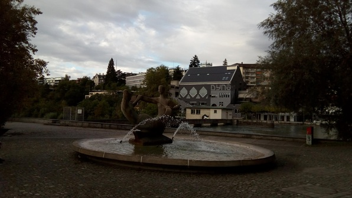

Woke up at 7:45, yay!
Felt really good after a solid rest. Studied German, showered, and breakfasted on dry muesli with a bit of Nutella mixed in. #GroceryDay
Walked to class with Juyoung; felt refreshed as we tackled some irregular verbs, and a little bit of grammar. Over break I finally got on the campus wifi and registered for a semester language course for optionality.
At Mittagspause (lunch break) I went to the Mensa with the usual crew; ran into Daniel and Suraj and invited them to join us, so it was a good and raucous lunch. Met a girl from Belgium who quizzed Daniel and I about US parties and quizzed Daniel about fraternity life :D
Chilling skillz
After the class I walked back to Culmann and decided to relearn how to chill. I planted myself in the lounge and started reading some Haskell stuff, then messaged with Gaya for a while. Things were going pretty well, and when I felt like taking a walk, I just did it. Went out with my frisbee and no plan! It was beautiful out. I ended up walking to the Aldi, because I couldn’t be planless forever :) I tried. At the Aldi’s, I stocked up on pretty much everything for less than dreizig franken, then headed back to Culmann.

Back at Culmann, I fired up the induction burner and cooked some chanterelle mushrooms. They weren’t as flavorful as I’d hoped, but they were good. Then I cooked some pancetta and onion, threw in some eggs and tomatoes and gruyere, and ate it with a nice slab of bread (of which, through a bizarre twist of fate, I have three loaves) and a pint. Then I had a good goofy conversation with Abi, played a bit of foosball–the fellow beat me in the second game, I’m gonna have to use my right hand next #InigoMontoya,
then I went up to Juyoung’s room and studied a bit of German. It turned out we have completely different texts, so it was a bit tricky, but still fun, got to practice some pronunciation.
Finally, I went down to the commons, hung out with Jonne, and wrote this log.